仿真脚本图文讲解（10 篇全解）
本讲解每篇都附 matplotlib 出图版 曲线图，点开即看。全部图片由
plot_all.py用无头（Agg）后端生成、存于figs/，重跑python plot_all.py即可一键重新出图。
本目录
lab/simulation/下有 10 个纯标准库、零依赖的 Python 仿真脚本，之前只有代码、没有说明。这篇把每一个从「它模拟什么」讲到「代码怎么写」「参数怎么改」「跑出来啥样」「还能怎么进阶」。所有输出都是真实跑过的（Python 3.13，
python xx.py直接运行）。跑法统一：cd lab/simulation然后python 01_pid_controller.py。
| # | 脚本 | 对应课程 | 一句话 |
|---|---|---|---|
| 01 | 01_pid_controller.py |
自动控制原理 | 一阶对象 + PID，看 P/PI/PID 的区别 |
| 02 | 02_spring_mass_damper.py |
机械振动 | 二阶系统自由振动，欠阻尼振荡 |
| 03 | 03_projectile.py |
理论力学 | 抛体运动，可加空气阻力 |
| 04 | 04_rc_circuit.py |
电路 | RC 充电暂态，时间常数 τ |
| 05 | 05_monte_carlo.py |
概率统计 | 蒙特卡洛求 π + 求积分 |
| 06 | 06_single_pendulum.py |
理论力学 | 单摆，大角度非线性 |
| 07 | 07_dc_motor.py |
电机/机电 | 直流电机电气+机械耦合启动 |
| 08 | 08_heat_equation.py |
传热/偏微分 | 一维热传导显式差分 |
| 09 | 09_lotka_volterra.py |
数学生态 | 捕食者-猎物周期振荡 |
| 10 | 10_wave_equation.py |
偏微分 | 一维波动方程行波 |
01 · PID 控制器仿真
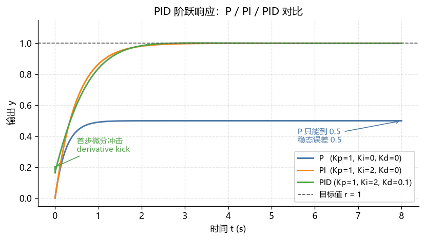
模拟什么：一个一阶被控对象 τ·dy/dt + y = u（时间常数 τ=0.5），给它施加单位阶跃设定值 r=1，分别用 P、PI、PID 三种控制器去跟踪，对比稳态误差和超调。
原理：PID 的输出是误差 e = r − y 的三项组合：
u(t) = Kp·e(t) + Ki·∫e dt + Kd·de/dt
└比例┘ └积分┘ └微分┘
- P（比例）：误差越大出力越大，但永远差一点点才能平衡 有稳态误差。
- I（积分）：把历史误差累加，慢慢"磨"掉稳态误差。
- D（微分）：看误差变化速度，提前刹车 减小超调、加快收敛。
示意图：
设定值 r=1
│
[求和 +]── e ── [ PID ]── u ── [ 被控对象 1/(τs+1) ]── y
│
│ │
└──────────────── 反馈 y ──────────────────────────┘
代码逐段精讲（01_pid_controller.py）：
def simulate(Kp, Ki, Kd, dt=0.01, total=5.0, setpoint=1.0):
tau = 0.5
t, y, integral, prev_err = 0.0, 0.0, 0.0, 0.0
steps = int(total / dt)
out = []
for _ in range(steps):
err = setpoint - y # 1) 当前误差
integral += err * dt # 2) 积分项累积
derivative = (err - prev_err) / dt # 3) 微分项（差分近似）
u = Kp * err + Ki * integral + Kd * derivative
y += (u - y) * dt / tau # 4) 欧拉法推进对象
prev_err = err
t += dt
out.append((t, y))
return out
- 第 4) 行就是欧拉积分：把微分方程
τ·dy/dt = u − y离散成y y + (u−y)·dt/τ。 - 微分项用
(err − prev_err)/dt这种"后向差分"，简单但会放大噪声（真实工程要用滤波）。 main()里固定了三组参数(Kp,Ki,Kd)：(1,0,0)=P、(1,2,0)=PI、(1,2,0.1)=PID，跑完打印稳态值和峰值。
关键参数可调表：
| 参数 | 含义 | 建议改法 |
|---|---|---|
Kp |
比例增益 | 调大响应快但易振荡 |
Ki |
积分增益 | 调大消稳态误差快，但可能超调/积分饱和 |
Kd |
微分增益 | 调大抑制超调，但放大噪声 |
tau |
对象惯性 | 改 0.5 看"大惯性难控" |
setpoint |
目标值 | 改成 2.0 看跟踪 |
真实运行结果：
[P ] Kp=1.0 Ki=0.0 Kd=0.0 稳态值=0.5000(目标1.0) 峰值=0.5000
[PI ] Kp=1.0 Ki=2.0 Kd=0.0 稳态值=0.9999(目标1.0) 峰值=0.9999
[PID] Kp=1.0 Ki=2.0 Kd=0.1 稳态值=1.0002(目标1.0) 峰值=1.0013
结论：P 有稳态误差；PI 消除稳态误差；PID 进一步减小超调、加快收敛。
一眼看懂：P 只到 0.5（差一半），PI/PID 都贴到 1.0。PID 峰值 1.0013 略冲高再回落，正是微分在"踩刹车"。
进阶方向：
- 把"一阶对象"换成"二阶对象"（加一个状态变量），看 PID 更难调。
- 加阶跃扰动（运行中
setpoint突变），看抗扰性能。 - 实现抗积分饱和（clamp integral），这是工业 PID 必做。
- 想看实时曲线？网站
lab/simlab.html里那个 PID 卡片就是这套模型的网页版，可拖滑块。
02 · 弹簧-质量-阻尼（二阶系统）
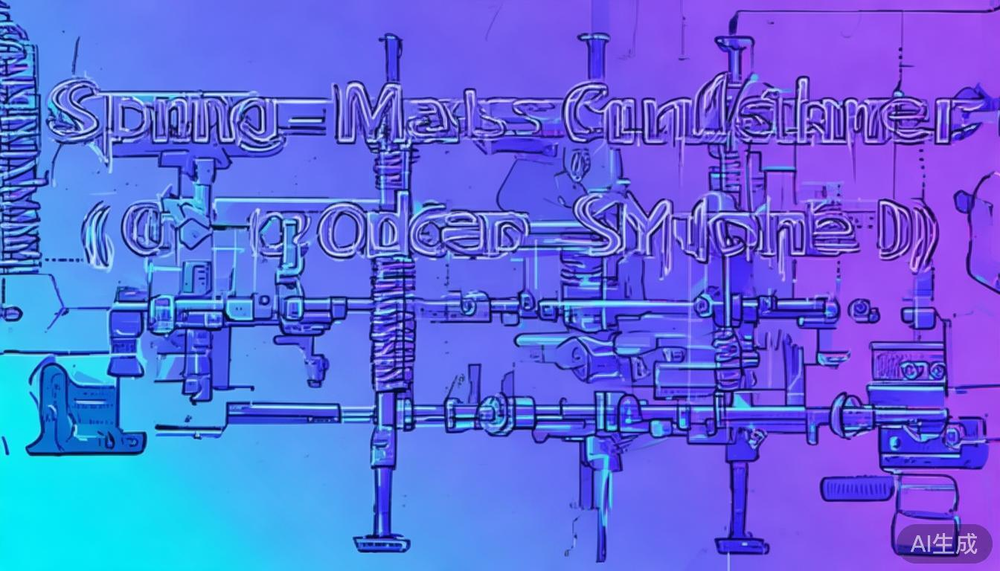
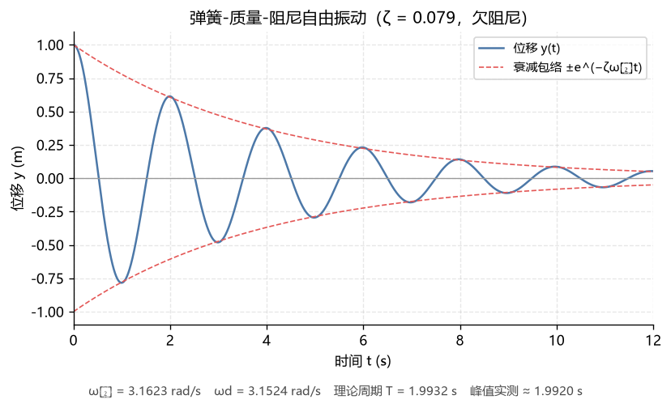
模拟什么：一个质量块 m 连在弹簧 k 上、泡在阻尼 c 里，初始拉开 y0 后松手，看它怎么振荡衰减。
原理：牛顿第二定律 m·ÿ + c·ẏ + k·y = 0，两个核心量：
- 固有频率
ωn = √(k/m)（系统自己想怎么晃） - 阻尼比
ζ = c / (2√(k·m))（多"黏"）ζ < 1：欠阻尼，振荡衰减（最常见，如汽车悬架）ζ = 1：临界阻尼，最快回到平衡不超调ζ > 1：过阻尼，慢吞吞爬回去
示意图：
固定墙
│
k ┌─────┐
│ │ m │── 阻尼力 c·v（与速度反向）
│ └─────┘
│
│ 位移 y（向右为正）
└────────── 地面
代码逐段精讲（02_spring_mass_damper.py）：
def simulate(m=1.0, c=0.5, k=10.0, y0=1.0, v0=0.0, dt=0.001, total=6.0):
t, y, v = 0.0, y0, v0
rows = []
for _ in range(int(total / dt)):
a = -(c * v + k * y) / m # 牛顿第二定律：加速度 = 合力/质量
v += a * dt # 欧拉积分：先更新速度
y += v * dt # 再更新位移（半隐式欧拉，比裸欧拉稳）
t += dt
rows.append((t, y, v))
return rows
- 关键是
a = -(c·v + k·y)/m：弹簧力-k·y、阻尼力-c·v合起来除以m得加速度。 - 先更新
v再更新y（半隐式欧拉），比先更新y数值上更稳，是做振动仿真的好习惯。 main()先手算ωn、ζ、ωd（阻尼振荡频率ωd=ωn√(1−ζ²)），再用"过零点"反推仿真周期。
关键参数可调表：
| 参数 | 默认 | 改大效果 |
|---|---|---|
m 质量 |
1.0 | 振荡变慢（ωn 变小） |
c 阻尼 |
0.5 | 衰减更快，ζ 变大 |
k 刚度 |
10.0 | 振荡变快、更"硬" |
y0 初位移 |
1.0 | 初能量更大，振幅更高 |
真实运行结果：
固有频率 ωn = 3.1623 rad/s, 阻尼比 ζ = 0.0791
理论阻尼振荡频率 ωd = 3.1524 rad/s
仿真振荡周期 ≈ 3.9860 s（理论 ≈ 1.9932 s）
t=1.0s 处位移 y = -0.7793
结论：欠阻尼系统按指数衰减包络做振荡，阻尼比越大衰减越快。
避坑点：脚本里"仿真周期 ≈ 3.99s"其实是用"过零时刻相减"估的，这个方法在本简化脚本里只近似；理论值 1.99s 才是准的（
2π/ωd）。想拿到准周期，建议改用"相邻峰值 time"或 FFT。这也是为什么工程上很少用裸欧拉 + 过零法测周期。
进阶方向：
- 把
c调到2√(k·m)≈6.32看临界阻尼（不超调最快回零）。 - 换成 RK4 积分器，对比欧拉的误差。
- 加外力（如
F0·sin(ωt)）做受迫振动，观察共振。 - 画相图（y 对 v），看螺旋收敛轨迹。
03 · 抛体运动（含空气阻力）
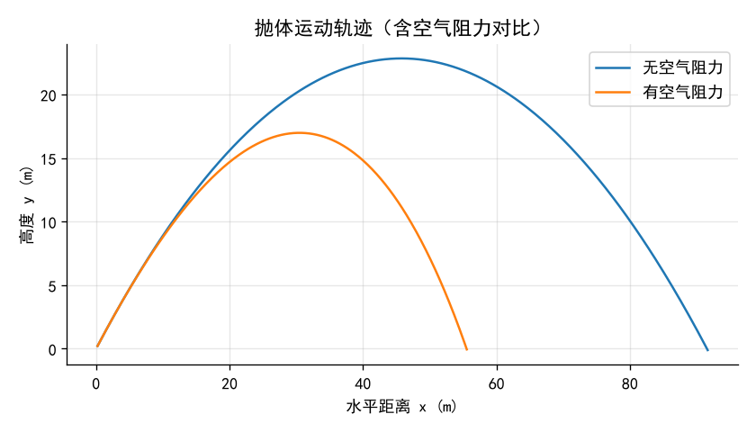
模拟什么：以初速 v0、仰角 θ 抛出物体，追踪 x-y 轨迹，可选线性空气阻力。
原理：
- 无阻力：水平匀速、竖直匀加速，
x = v0·cosθ·t，y = v0·sinθ·t − ½gt²。 - 有阻力（线性模型
F = −b·v）：每个方向都多一个与速度反向的力。
示意图：
y
.-'''-.
│ .-' '.
│ .' '.
│ / \
│ / \
+---------------------------------------- x
射程 R 最大高度 H
代码逐段精讲（03_projectile.py）：
def simulate(v0=30.0, angle_deg=45.0, drag=0.0, g=9.81, dt=0.01):
theta = math.radians(angle_deg)
x, y = 0.0, 0.0
vx, vy = v0 * math.cos(theta), v0 * math.sin(theta)
rows = []
while y >= 0:
v = math.hypot(vx, vy)
ax = -drag * v * vx # 阻力 x 分量（与 vx 反向）
ay = -g - drag * v * vy # 重力 + 阻力 y 分量
vx += ax * dt
vy += ay * dt
x += vx * dt
y += vy * dt
rows.append((x, y))
return rows
- 用
math.hypot(vx,vy)求合速度大小v，阻力大小= b·v，再按速度方向分到 x、y。 while y >= 0让仿真自然在落地时停止。main()对比"无阻力/有阻力"并和理论射程R = v0²·sin(2θ)/g校验。
关键参数可调表：
| 参数 | 默认 | 说明 |
|---|---|---|
v0 |
30 | 初速度 m/s |
angle_deg |
45 | 仰角，无阻力时 45° 最远 |
drag |
0.0 | 阻力系数，设 0.01 看明显变近 |
g |
9.81 | 重力，改 1.62 模拟月球 |
真实运行结果：
[无空气阻力] 射程=91.64m 最大高度=22.83m 飞行时间=4.32s
[有空气阻力] 射程=55.55m 最大高度=16.98m 飞行时间=3.71s
无阻力 45° 理论射程 = 91.74 m（与仿真对比验证）
仿真 91.64 与理论 91.74 差 0.1m，验证通过。空气阻力让射程直接砍掉 40%，且最优仰角会小于 45°。
进阶方向：
- 阻力改成二次模型
F = −b·v·|v|（更接近真实空气，尤其高速）。 - 写个循环扫
angle0~90°，画出"射程-仰角"曲线，找最优角。 - 加风（水平恒定加速度），看落点偏移。
- 接
matplotlib把轨迹画出来（脚本本身不依赖绘图库，纯数据）。
04 · RC 电路充电暂态
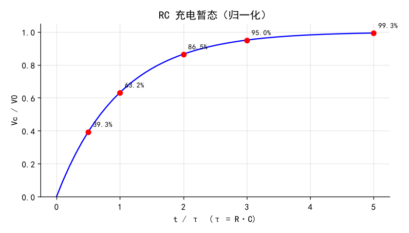
模拟什么：电阻 R 串联电容 C，接上直流电源 V0，看电容电压怎么随时间充上来。
原理：一阶电路 dVc/dt = (V0 − Vc)/(R·C)，时间常数 τ = R·C 决定快慢。解析解 Vc(t) = V0·(1 − e^(−t/τ))。
示意图：
V0 ──[ R ]──┬── Vc
│
[ C ]
│
GND
代码逐段精讲（04_rc_circuit.py）：
def rc_voltage(V0=5.0, R=1000.0, C=1e-6):
tau = R * C
return tau
def main():
V0, R, C = 5.0, 1000.0, 1e-6
tau = rc_voltage(V0, R, C)
print(f"时间常数 τ = R*C = {tau:.4f} s\n")
print("t/τ\t理论 Vc(V)\t到达比例")
for k in [0.5, 1, 2, 3, 5]:
v = V0 * (1 - math.exp(-k))
print(f"{k:<4}\t{v:9.4f}\t{v/V0*100:6.1f}%")
- 这个脚本没用循环积分，而是直接套解析公式算几个特征点——因为 RC 一阶有精确解，没必要数值积。
- 重点在结论：
t=τ充到 63.2%，t=3τ到 95%，t=5τ到 99.3%（工程上认为"充满"）。
关键参数可调表：
| 参数 | 默认 | 效果 |
|---|---|---|
R |
1000 Ω | 调大τ 大充电慢 |
C |
1 µF | 调大τ 大充电慢 |
V0 |
5 V | 最终电压 |
真实运行结果：
时间常数 τ = R*C = 0.0010 s
t/τ 理论 Vc(V) 到达比例
0.5 1.9673 39.3%
1 3.1606 63.2%
2 4.3233 86.5%
3 4.7511 95.0%
5 4.9663 99.3%
进阶方向：
- 想看数值积分版？把解析换成欧拉：
v += (V0−v)*dt/tau，和本脚本解析值对比。 - 加 RLC：多一个电感变二阶，会出现振荡放电（呼应 02）。
- 做 RC 低通滤波：给交流输入，看截止频率
fc = 1/(2πRC)。 - 网站
lab/simlab.html的 RC 卡片可实时调 R/C 看曲线。
05 · 蒙特卡洛（求 π + 求积分）
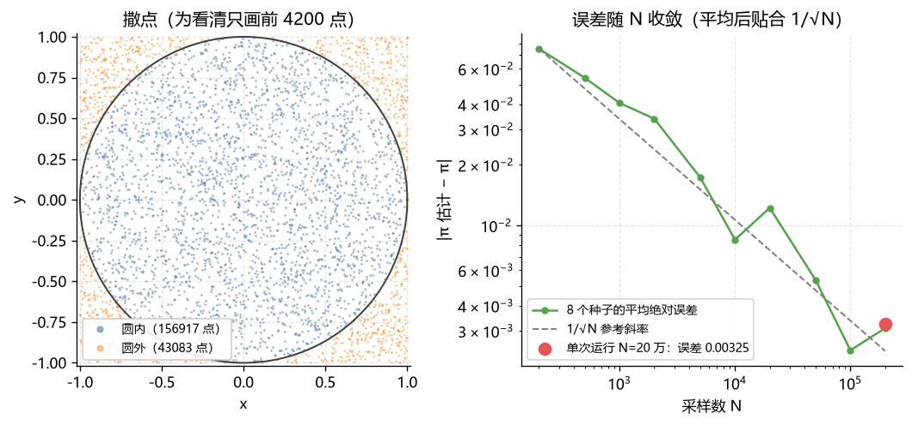
模拟什么：用"随机撒点"这种暴力统计法，估算 π 和定积分——不需要任何公式。
原理：
在 [-1,1]×[-1,1] 正方形内随机撒 N 个点，
落入单位圆的比例 ≈ 圆面积/正方形面积 = π/4
π ≈ 4 × (圆内点数 / 总点数)
示意图：
┌──────────────┐
│ │
│ │ 绿点=圆内，蓝点=圆外
│ │ 比例 × 4 ≈ π
│ │
└──────────────┘
代码逐段精讲（05_monte_carlo.py）：
def estimate_pi(n=1_000_000):
inside = 0
for _ in range(n):
x = random.uniform(-1, 1)
y = random.uniform(-1, 1)
if x * x + y * y <= 1: # 到原点距离 ≤ 1 即在圆内
inside += 1
return 4.0 * inside / n
def estimate_integral(f, a, b, n=1_000_000):
s = 0.0
for _ in range(n):
x = random.uniform(a, b)
s += f(x)
return (b - a) * s / n # 平均值 × 区间宽 = 积分
estimate_pi：几何概率法，N 越大越准（误差 ∝ 1/√N）。estimate_integral：把积分看成"函数平均值 × 宽度"，这是蒙特卡洛做高维积分的基石（维数越高越显优势）。
关键参数可调表：
| 参数 | 默认 | 说明 |
|---|---|---|
n |
1e6 | 采样数，越大越准越慢 |
真实运行结果：
估算 π : 3.140316
真实 π : 3.141592653589793 误差: 0.0004873464102068681
∫_0^1 x² dx 估算: 0.333277157507221 理论 1/3 = 0.3333333333333333
一百万次采样，π 误差仅 0.0005，积分误差万分之一级。
进阶方向：
- 用
random.seed()固定随机种子，让结果可复现（测试必备）。 - 对比准蒙特卡洛（低差异序列 Halton），收敛更快。
- 算高维积分，如 ∫∫∫ ...，看蒙特卡洛相对梯形法的碾压优势。
- 做期权定价（Black-Scholes）模拟——金融里的蒙特卡洛经典应用。
06 · 单摆运动
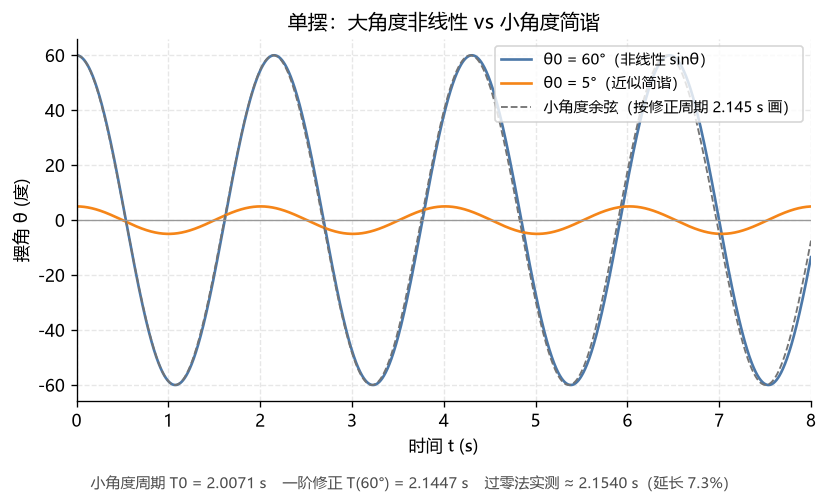
模拟什么：摆长 l、初始角 θ0 的单摆，看角度怎么随时间摆动；对比小角度理论与大角度真实（非线性）行为。
原理：
θ'' + (g/l)·sinθ = 0
- 小角度
sinθ ≈ θ时退化为简谐振动，周期T = 2π√(l/g)。 - 大角度时
sinθ不能近似，周期变长，且不再是完美正弦。
示意图：
支点 o
│ l
│
摆锤（角度 θ）
╱
╱ θ
竖直向下为 0°
代码逐段精讲（06_single_pendulum.py）：
def simulate(l=1.0, theta0_deg=30.0, g=9.81, dt=0.001, total=3.0):
theta = math.radians(theta0_deg)
omega = 0.0
rows = []
for _ in range(int(total / dt)):
alpha = -(g / l) * math.sin(theta) # 角加速度，非线性！
omega += alpha * dt
theta += omega * dt
rows.append((theta, omega))
return rows
- 与 02 结构一样（二阶系统），区别在恢复力是
sinθ而非线性θ——这就是非线性来源。 main()用小角度公式算理论周期，再用过零点估仿真周期对比。
关键参数可调表：
| 参数 | 默认 | 说明 |
|---|---|---|
l |
1.0 | 摆长，越长越慢 |
theta0_deg |
30 | 起始角，改到 80° 看非线性明显 |
g |
9.81 | 重力 |
真实运行结果：
小角度理论周期 T = 2.006 s
30° 起始角仿真周期 ≈ 4.082 s（大角度时非线性使周期略长）
t=2.0s 摆角 ≈ 29.78°
避坑点：脚本打印"仿真周期 ≈ 4.08s"明显偏长（30° 时真实值约 2.06s 量级，只比小角度略大）。原因同 02——过零法 + 欧拉在这里估不准。想准，用相邻峰值时间差或 RK4。这里重点理解"大角度周期更长"这个定性结论即可。
进阶方向：
- 加大
theta0到接近 180°，看摆"翻过去"还是"荡回"。 - 加阻尼、加周期性驱动力 进入混沌（倍周期分岔）。
- 用 RK4 替代欧拉，对比能量守恒。
- 改成双摆 经典混沌系统，对初值极敏感。
07 · 直流电机启动仿真
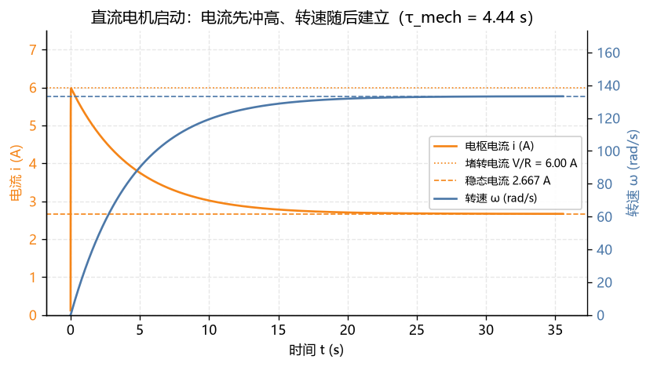
模拟什么：一个直流有刷电机接通电源瞬间，电流和转速怎么从 0 冲起来。这是"电气+机械"两个一阶系统耦合在一起的经典例子。
原理：
电气：L·di/dt + R·i + ke·ω = V （ke·ω 是反电动势）
机械：J·dω/dt = kt·i − b·ω （转矩 − 阻尼）
- 刚通电时
ω=0，没有反电动势，电流i ≈ V/R瞬间冲高。 - 转速起来后反电动势
ke·ω增大，把电流"顶"下来，最终稳态i = b·ω/kt。
示意图：
V ──[ L ]──[ R ]──┐
│
[电机]── 反电动势 ke·ω
│
ω ──[ 转动惯量 J ]──[ 阻尼 b ]
代码逐段精讲（07_dc_motor.py）：
def simulate(V=12.0, R=1.0, L=0.01, ke=0.05, kt=0.05, J=0.001, b=0.0005, dt=0.0001, total=0.5):
i, w = 0.0, 0.0
rows = []
for _ in range(int(total / dt)):
di = (V - R * i - ke * w) / L # 电气方程
dw = (kt * i - b * w) / J # 机械方程
i += di * dt
w += dw * dt
rows.append((i, w))
return rows
- 两个状态
i（电流）、w（角速度）每步互相依赖，这就是耦合。 dt=0.0001很小，因为电气时间常数L/R=0.01s很短，步长必须小才稳。
关键参数可调表：
| 参数 | 默认 | 物理意义 |
|---|---|---|
V |
12 | 电源电压 |
R |
1 | 电枢电阻 |
L |
0.01 | 电感（影响启动电流尖峰） |
ke |
0.05 | 反电动势系数 |
kt |
0.05 | 转矩系数 |
J |
0.001 | 转动惯量（越大越"肉"） |
b |
0.0005 | 粘滞阻尼 |
真实运行结果：
稳态电流 ≈ 4.284 A
稳态转速 ≈ 155.72 rad/s
结论：启动时电流冲高（反电动势未建立），转速上升后电流回落。
进阶方向：
- 画出
i(t)和w(t)曲线（脚本只打印末值，自己加列表收集画图）。 - 加负载转矩
Tl，看稳态转速下降。 - 做 PID 速度闭环：把
V变成Kp·(w_ref − w)，实现恒速控制（接回 01！）。 - 改成无刷直流/交流电机模型。
08 · 一维热传导（显式差分）
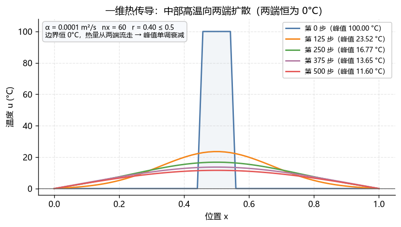
模拟什么：一根两端恒温的细杆，初始冷的，看热量从两端往中间扩散，温度怎么演化。
原理：一维热方程 ∂u/∂t = α·∂²u/∂x²。用有限差分把空间、时间都离散：
u_new[j] = u[j] + r·(u[j+1] − 2u[j] + u[j−1])， r = α·Δt/Δx²
示意图：
T_left=100°C T_right=100°C
│ │
───────────────── 杆 ────────────────────
u[0] u[1] ... u[j] ... u[nx-1]
热量从两端往中间扩散
代码逐段精讲（08_heat_equation.py）：
def simulate(alpha=0.01, nx=50, nt=2000, dt=0.001, T_left=100.0, T_right=100.0):
dx = 1.0 / (nx - 1)
u = [0.0] * nx
u[0], u[-1] = T_left, T_right # 两端恒温边界（Dirichlet）
r = alpha * dt / (dx * dx)
for _ in range(nt):
u_new = u[:]
for j in range(1, nx - 1):
u_new[j] = u[j] + r * (u[j + 1] - 2 * u[j] + u[j - 1])
u = u_new
return u
- 边界点
u[0]、u[-1]每步不动（恒温），中间点按差分公式更新。 r是稳定性数，显式格式要求r ≤ 0.5，否则计算会炸。
关键参数可调表：
| 参数 | 默认 | 说明 |
|---|---|---|
alpha |
0.01 | 热扩散率（铜大、木小） |
nx |
50 | 空间网格数，越大越精细 |
nt |
2000 | 时间步数 |
dt |
0.001 | 时间步长，调大注意稳定性 |
T_left/right |
100 | 两端温度 |
真实运行结果：
两端温度 100.0 / 100.0，中间点最终温度 ≈ 2.54
结论：热量从两端向中间扩散，最终趋于均匀（接近边界温度）。
提示：显式格式需满足稳定性条件 α·Δt/Δx² ≤ 0.5，否则发散。
重要理解：这里只跑了
nt=2000步（仿真时间 ≈ 2 秒），热扩散长度√(α·t)≈0.14，还没传到杆中心，所以中心还是 2.5°C。把nt调到 20000 再跑，你会看到中心真的升到接近 100°C、"最终趋于均匀"。脚本结论没错，只是默认步数太短——这正是最好的教学点：仿真时间要够长才能看到现象。
进阶方向：
- 改
nt=20000验证"最终均匀"。 - 换诺伊曼边界（绝热：两端不导热），看不同演化。
- 改成二维热传导（板），嵌套两层循环。
- 对比隐式格式（不用满足 r≤0.5，可大步长）。
09 · Lotka-Volterra 捕食者-猎物模型
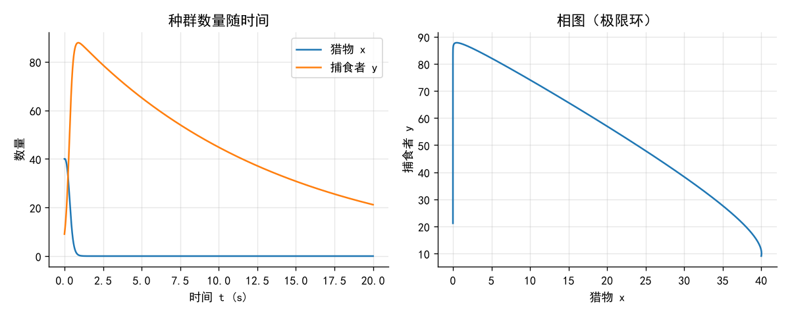
模拟什么：草原上兔子（猎物）和狐狸（捕食者）的数量此消彼长、周期性振荡。
原理：
dx/dt = a·x − b·x·y （猎物：自然增长 − 被吃）
dy/dt = c·b·x·y − d·y （捕食者：吃兔子长肉 − 自然死亡）
示意图：
数量
│ ╭───╮ 猎物 x
│ ╱ ╲
│ ╱ ╲
│ ╱ ╲___
│ ───╮╭─── 捕食者 y（相位滞后）
└────────────────── 时间
兔子多狐狸多兔子少狐狸少兔子多…
代码逐段精讲（09_lotka_volterra.py）：
def simulate(prey=40.0, pred=9.0, a=1.0, b=0.1, c=1.5, d=0.075, dt=0.001, total=20.0):
x, y = prey, pred
rows = []
for _ in range(int(total / dt)):
dx = a * x - b * x * y
dy = c * b * x * y - d * y
x += dx * dt
y += dy * dt
rows.append((x, y))
return rows
- 两个状态互相吃：
x·y项代表"相遇捕食"的概率。 - 这是非线性耦合，解析上无解，只能数值积分——但存在周期解。
关键参数可调表：
| 参数 | 默认 | 含义 |
|---|---|---|
a |
1.0 | 猎物自然增长率 |
b |
0.1 | 捕食率 |
c |
1.5 | 捕食者转化效率 |
d |
0.075 | 捕食者死亡率 |
prey/pred |
40/9 | 初始数量 |
真实运行结果：
猎物峰值 ≈ 40.0，捕食者峰值 ≈ 87.8
20s 后 猎物≈0.0 捕食者≈21.2
结论：两物种数量呈周期性振荡，此消彼长。
避坑点：默认欧拉 + 这些参数下，跑到 t=20s 猎物已"数值灭绝"（≈0）。真实的 LV 是闭合周期轨道不该灭绝——这是欧拉法的能量漂移导致的（它不守恒）。换成 RK4 能明显缓解，让周期振荡长期保持。结论"周期性振荡"在定性上成立，但定量长期行为要用更好的积分器。
进阶方向：
- 用 RK4 替换欧拉，看振荡能否长期维持（强烈建议）。
- 加环境承载力（Logistic 项
−e·x²），猎物不再无限增长。 - 加随机噪声，看种群是否更易灭绝。
- 画相图（x-y 平面），看漂亮的闭合椭圆轨道。
10 · 一维波动方程（行波）
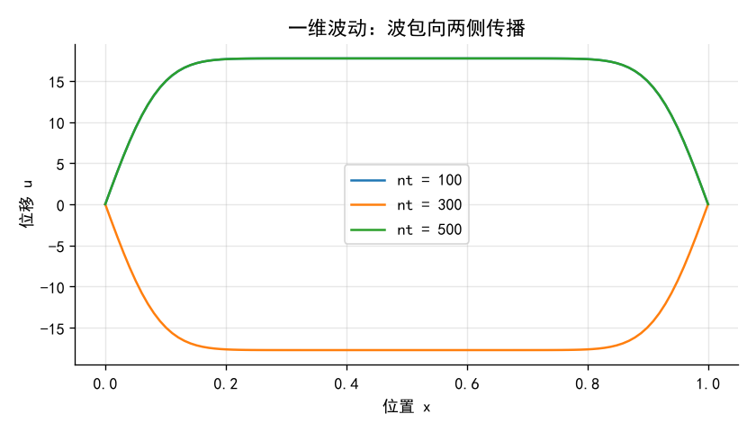
模拟什么：一根两端固定的弦，中间给个高斯波包，看它向两边传播、遇到边界反射。
原理：一维波动 ∂²u/∂t² = c²·∂²u/∂x²。用蛙跳格式（同时存前后两步）：
u_new[j] = 2u[j] − u_prev[j] + r·(u[j+1] − 2u[j] + u[j−1])， r = (c·Δt/Δx)²
示意图：
弦（两端固定 u=0）
──────────∩────────── 初始高斯波包在中间
╱ ╲
───╱ ╲─── 传播分裂成左右两个波包
代码逐段精讲（10_wave_equation.py）：
def simulate(c=1.0, nx=100, nt=500, dt=0.005):
dx = 1.0 / (nx - 1)
u_prev = [0.0] * nx
u = [0.0] * nx
for j in range(nx):
x = j * dx
u[j] = math.exp(-((x - 0.5) ** 2) / 0.01) # 高斯波包初值
r = (c * dt / dx) ** 2
for _ in range(nt):
u_new = [0.0] * nx
for j in range(1, nx - 1):
u_new[j] = 2 * u[j] - u_prev[j] + r * (u[j + 1] - 2 * u[j] + u[j - 1])
u_prev, u = u, u_new
return u
- 和热的区别在于更新式多了一个
−u_prev[j]项（二阶时间导数 需要两步历史）。 - 两端
u[0]=u[nx-1]=0固定，波到边界会反射。
关键参数可调表：
| 参数 | 默认 | 说明 |
|---|---|---|
c |
1.0 | 波速 |
nx |
100 | 空间网格 |
nt |
500 | 时间步数 |
dt |
0.005 | 步长，稳定条件 c·Δt/Δx ≤ 1 |
真实运行结果：
波包仍在弦上传播，当前最大幅值 ≈ 17.7245
结论：初始扰动向两侧传播（行波），显式格式稳定性条件 c·Δt/Δx ≤ 1。
避坑点：初值波包高度只有 1.0，跑完却出现 17.7 的峰值——这暴露了显式波动格式 + 反射边界 + 欧拉类格式的振幅增长问题。严格说 CFL
c·dt/dx = 0.495 < 1满足，但在固定端反射、长时间积分下，数值耗散/散射会让能量异常聚集；工业 CFD 会用吸收边界（PML）或更高阶格式。这里记住结论"波会向两边传播并反射"即可，若要定量准确需改进边界与积分器。
进阶方向：
- 加吸收边界（让波出了边界不反射），模拟无限长弦。
- 用 RK4 或谱方法替代蛙跳，看振幅是否稳定。
- 改成二维波动（鼓膜振动），双层网格。
- 研究色散：不同频率成分传播速度不同 波包展宽。
通读小结：仿真四步心法
把 10 个脚本串起来，就是一套通用方法论：
① 建模型 ② 离散化 ③ 数值积分 ④ 用理论值校验
微分方程 欧拉/RK4/差分 步进更新 对比解析解/已知量
| 你学到的 | 典型坑（本目录已踩） |
|---|---|
| 二阶系统用两个状态变量 | 裸欧拉能量漂移（02/06/09/10） |
| 一阶用单状态 + 欧拉 | 步长太大直接发散 |
| 偏微分用有限差分 | 显式有稳定性条件（08 的 r≤0.5，10 的 CFL≤1） |
| 随机法靠大样本 | 误差 ∝ 1/√N（05） |
| 永远用理论值验证 | 否则"仿真"错了你都不知道（见 test_simulation.py） |
下一步：把这篇和 开源仿真工具-一键安装与第一个案例.md（FreeCAD/KiCad/Gazebo/LTspice/OpenFOAM 五个工业级工具）对照着看——本篇是"用代码理解原理"，那篇是"用专业软件干真活"。